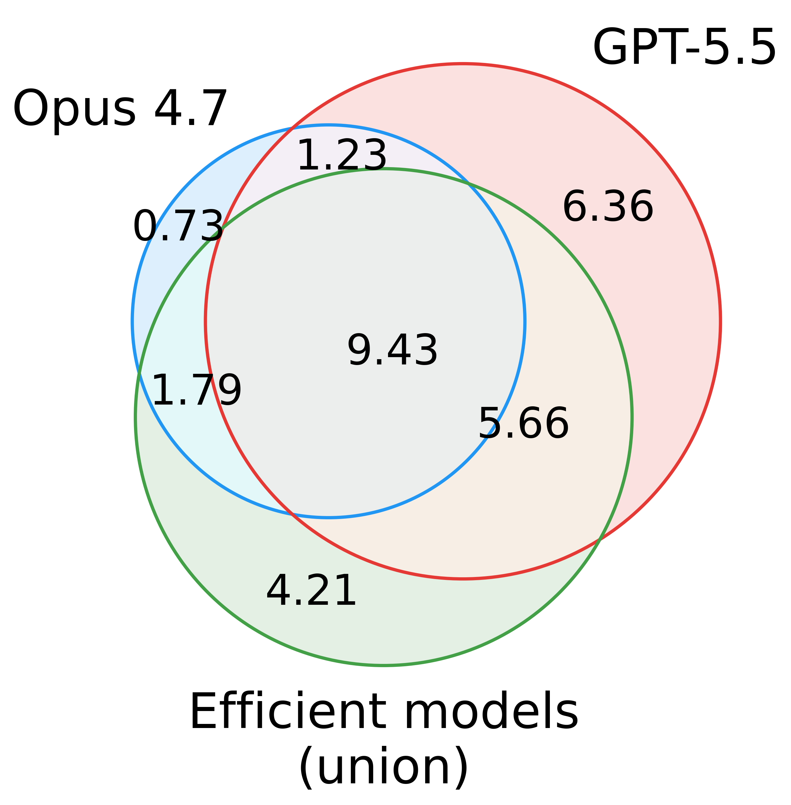
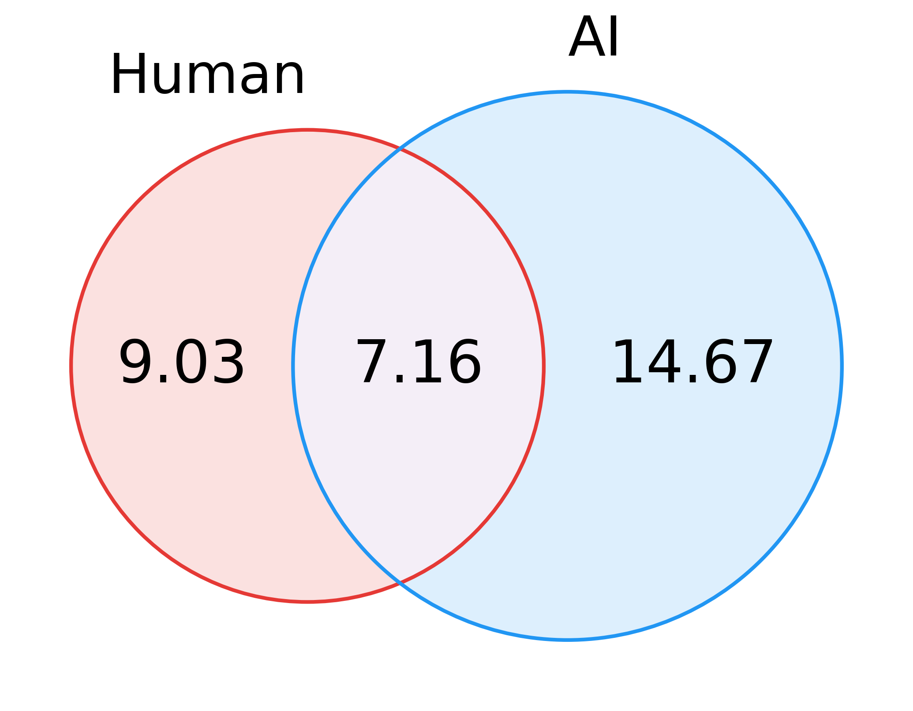

We benchmark four AI review systems across six models on real papers. The best configuration separates weak from strong papers 83% of the time, 91% of its comments flag a real issue, and it catches 72% of the errors we introduce. AI review is already useful today and will likely keep improving.
In our first post, we argued that AI-assisted reviewing is necessary, and we named one main open problem: how do we know whether an AI-generated review is good?
Current AI review systems do more than send one prompt to a model. They split the paper, keep track of context, run several agents, and return a list of comments, each tied to a passage of the paper. Reports of their usefulness are mostly anecdotal, and few measurements exist. In this post, we describe our new paper, which measures them in three ways.
We compare four systems. Zero-shot gives the whole paper to a model in a single prompt. OpenAIReview, our open-source system, reads the paper in order and keeps a running summary of its definitions, equations, and claims. coarse is an open-source system with one agent per section and a final editing pass. Reviewer3 is a commercial system that we use as a black box.
The three open systems can run on any model, so we test each of them on two frontier models (GPT-5.5 and Claude Opus 4.7) and four efficient ones. This lets us separate two questions: how much of a system's performance comes from the model, and how much comes from the system around it?
Since a paper has no gold label for quality, we take papers from ICLR and NeurIPS at the two ends of four signals: citations, awards, review scores, and a combination of them. For example, we compare award papers with rejected papers that were never published elsewhere. Our hypothesis is that a review system that tracks real issues should comment more on lower-quality papers. We measure this with pairwise accuracy: among all pairs of one weak and one strong paper, the share of pairs in which the weak paper gets more comments.
Every system does better than chance. The best configuration, OpenAIReview with GPT-5.5, is right for 83% of the pairs. Reviewer3 and the best zero-shot setup both reach 80%, and coarse reaches 66%. The pattern also holds when we count only major and moderate comments. Note that none of the systems was trained for this task.
The comments are mostly correct. We sampled 300 comments and had six models from different vendors judge each one, with a human check on a sample and on every contested case. For OpenAIReview with GPT-5.5, 91% of the comments flag a real issue. Reviewer3 is at 83%, zero-shot at 70%, and coarse at 64%.
To measure error recall, we take 74 arXiv papers from eight fields, from econometrics to genomics, and inject four kinds of errors into their LaTeX source: local math edits such as a flipped sign, false claims, broken reasoning, and flawed experimental design. Then we check whether a review flags each one.
Here is one planted error of the false-claim kind, from a paper on metabolic models of bacteria (arXiv:2604.25233). The edit changes one word.
Each candidate reaction i is assigned a cost RCi reflecting its plausibility for the target organisms, computed from taxonomic distance […]; lower cost reactions are supported by closer relatives and are preferred.
Each candidate reaction i is assigned a cost RCi reflecting its plausibility for the target organisms, computed from taxonomic distance […]; higher cost reactions are supported by closer relatives and are preferred.
Why it is wrong. The cost grows with taxonomic distance, so reactions from closer relatives have a lower cost, and the method prefers low cost. The edited sentence reads well by itself. A reviewer must connect it with the definition of the cost to see the error.
| System (best model) | Weak vs. strong | Correct comments | Planted errors caught |
|---|---|---|---|
| OpenAIReview | 83% | 90.7% | 71.6% |
| Zero-shot | 80% | 70.3% | 59.8% |
| Reviewer3 | 80% | 82.7% | 26.5% |
| coarse | 66% | 64.0% | 20.7% |
The strongest configuration (OpenAIReview and GPT 5.5) catches 71.6% of the planted errors. Reviewer3 and coarse return only 5 to 10 comments per paper by design, so this test understates their value as reviewers.
The harness matters. With the same model, GPT-5.5, a single prompt catches 59.8% of the errors and OpenAIReview catches 71.6%. Yet the harness can also lower recall. On DeepSeek-V4-Flash, coarse lowers recall from 31.0% to 20.7%, while OpenAIReview raises it to 55.8%.
Models find different errors. Different models under the same system comment on different paragraphs. Together, the six models catch 83.3% of the planted errors, 11.7 points more than the best single model. This is an upper bound, since it keeps every comment from every model, but it shows what is achievable in the near future.
AI and human reviewers look at different things. On papers with public human reviews, AI and humans flag mostly different paragraphs. Humans write 80% of the comments on novelty, scope, and motivation. AI writes most of the comments on claims, experiments, and mathematics. The two are complementary, which supports using AI in peer review.


The average count of paragraphs per paper that get a comment from the reviewers in a region.
A year ago, the question was whether AI can review a paper. The question now is how much of a review AI should write, and for which parts. Models already pick up signals of paper quality and detect many errors. This opens a wide space for the design of the system around the model, which can be tailored to different readers, such as authors, area chairs, or one field. As more of them appear, we will need more benchmarks to measure them.
Like the systems tested, the benchmark is open-source! If you build an AI review system, you can run it on the same papers and see how yours perform.
@article{nguyen2026benchmarking,
title = {Benchmarking Agentic Review Systems},
author = {Nguyen, Dang and Hao, Wanqing and Elazar, Yanai and Tan, Chenhao},
year = {2026},
journal = {arXiv preprint arXiv:2606.19749},
url = {https://arxiv.org/abs/2606.19749}
}